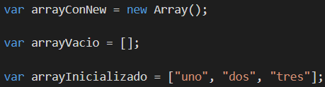
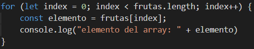
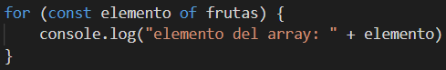

Trabajando con arrays
El objeto Array de JavaScript es un objeto global que es usado
en la construcción de arrays, que son objetos tipo lista de alto nivel.
Los arrays son uno de los tipos que javascript maneja y nos permite administrar colecciones de objetos.
Los arrays son uno de los tipos que javascript maneja y nos permite administrar colecciones de objetos.
Cómo utilizar los arrays
ver archivo "arrays.js"Para crear un array podemos hacer lo siguiente:
-
Para crear un nuevo array vacío lo hacemos de la siguiente forma:
var array = []; -
Si bien podemos utilizar new para crear un nuevo array de la siguiente forma:
var array = new Array();, se recomienda no utilizar esta nomenclatura para evitar complejizar la lectura o llegar a comportamientos indeseados. -
Si lo que deseamos es crear un nuevo array inicializado con los valores que queremos,
debemos hacerlo de la siguiente forma:
var arrayNumeros = ["uno", "dos", "tres"];

Agregar, acceder y quitar elementos de un array
ver archivo "arrays.js"Una vez que tenemos un array las primeras acciones que necesitaremos hacer será adicionar elementos, acceder a dichos elementos y eliminar elementos de las colecciones. Para realizar las acciones descriptas tenemos funcionalidades en javascript que exponen los comportamientos según se detalla a continuación:
-
Partimos de la premisa que se creo una nueva variable de la siguiente forma:
var frutas = []; -
Podemos adicionar nuevos elementos al array frutas
utilizando el método push(nuevoElemento). En este ejemplo podríamos adicionar una fruta de
la siguiente forma :
frutas.push("manzana");
Realizando dicho push, al final de la colección adicionamos el elemento "manzana". -
Si queremos acceder a los elementos de un array podemos hacerlo accediendo directamente a la
posición del elemento que queremos visualizar, teniendo en cuenta que el índice se calcula
como zero-based (esto quiere decir que comienza desde cero). Por ejemplo, para acceder al
primer elemento de la colección de frutas podemos hacerlo de la siguiente forma
var primerElemento = frutas[0];
Si se intenta acceder por índice a un elemento que no existe en el array esto retornará undefined.
Por ejemplo, si hacemosvar sinElemento = frutas[200];la variable sinElemento tendrá el valor undefined. -
Si lo que se quiere es iterar por los elementos dentro de un array se pueden utilizar las
estructuras de loop for.
Podemos utilizar una estructura de for clásico como la siguiente:

O bien podemos utilizar una estructura de javascript del tipo for-of:  -
Otra forma disponible para acceder a los elementos de un array es a través de
la función pop(). La función pop de
javascript permite extraer de un array el último elemento de la colección, con
lo que no solo obtenemos una referencia del elemento, sino que éste es removido del
array.
En el siguiente código la variable elemento tiene el valor que tenía el último elemento que existía en el array al mismo tiempo que fue removido del mismo.
var elemento = frutas.pop();
Elementos que contiene el array frutas:
Para mayor detalles en el manejo de arrays referirse a los siguientes enlaces: